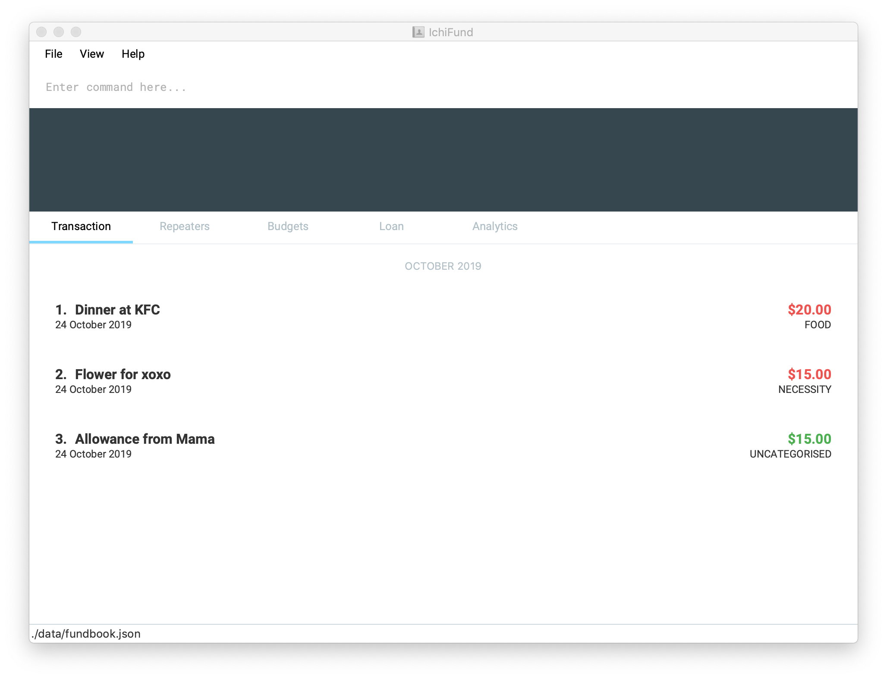

By: Team AY1920S1-CS2103T-W12-4 Since: Sep 2019 Licence: MIT
1. Introduction
IchiFund is for those who prefer to use a desktop app for managing finance. More importantly, IchiFund is optimized for those who prefer to work with a Command Line Interface (CLI) while still having the benefits of a Graphical User Interface (GUI). If you can type fast, IchiFund can get your finance management tasks done faster than traditional GUI apps. Interested? Jump to the Section 2, “Quick Start” to get started. Enjoy!
2. Quick Start
-
Ensure you have Java
11or above installed in your Computer. -
Download the latest
ichifund.jarhere. -
Copy the file to the folder you want to use as the home folder for your IchiFund.
-
Double-click the file to start the app. The GUI should appear in a few seconds.
 -
Type the command in the command box and press Enter to execute it.
e.g. typinghelpand pressing Enter will open the help window. -
Some example commands you can try:
-
list: lists all contacts -
addn/John Doe p/98765432 e/johnd@example.com a/John street, block 123, #01-01: adds a contact namedJohn Doeto the Address Book. -
delete3: deletes the 3rd contact shown in the current list -
exit: exits the app
-
-
Refer to Section 3, “Features” for details of each command.
3. Features
Command Format
-
Words in
UPPER_CASEare the parameters to be supplied by the user e.g. inadd n/NAME,NAMEis a parameter which can be used asadd n/John Doe. -
Items in square brackets are optional e.g
n/NAME [t/TAG]can be used asn/John Doe t/friendor asn/John Doe. -
Items with
… after them can be used multiple times including zero times e.g.[t/TAG]…can be used ast/friend,t/friend t/familyetc. -
Parameters can be in any order e.g. if the command specifies
n/NAME p/PHONE_NUMBER,p/PHONE_NUMBER n/NAMEis also acceptable.
3.1. IchiFund Basics
3.1.1. Viewing help : help
Format: help
3.1.2. Exiting the program : exit
Exits the program.
Format: exit
3.1.3. Saving the data
IchiFund data are saved in the hard disk automatically after any command that changes the data.
There is no need to save manually.
3.2. Wealth
3.2.1. Set current wealth: wealthset
Set current wealth.
Format: wealthset a/AMOUNT
Examples:
-
wealthset a/2103.20
Sets current wealth to $2103.20.
3.3. Transactions
3.3.1. Creating transaction: txadd
Creates a transaction.
Format: txadd t/TYPE m/DESCRIPTION a/AMOUNT [d/DATE] [c/CATEGORY]
Examples:
-
txadd t/in m/Salary a/2101.00 c/Work
Creates an income transaction of $2101.00 titled "Salary" occurring today under the category "Work". -
txadd t/out m/Lunch a/12.31 c/Food d/10092019
Creates an expenditure transaction of $12.32 titled "Food" occuring on the 10th September 2019 under the category "Food".
3.3.2. Editing transaction: txedit
Edits a transaction.
Format: txedit i/TRANSACTION_ID [t/TYPE] [m/DESCRIPTION] [a/AMOUNT] [d/DATE] [c/CATEGORY]
Examples:
-
txedit i/1 m/Dinner a/32.30
Edits the description of the 1st transaction in the current list to "Dinner", and its amount to $32.30.
3.3.3. Deleting transaction: txdelete
Deletes a transaction.
Format: txdelete i/TRANSACTION_ID
Examples:
-
txdelete i/5
Deletes the 5th transaction in the current list.
3.3.4. Finding transaction: txfind
Filters transactions in current list by type, keywords, category, month, and/or year.
Format: txfind [t/TYPE] [s/KEYWORD]… [m/MONTH] [y/YEAR] [c/CATEGORY]
Examples:
-
txfind m/5 y/2019 c/Education
Finds all transactions in the current list from May 2019 from the category "Education".
3.3.5. List all transactions: txlist
Lists all transactions.
Format txlist
3.4. Transaction Repeaters
3.4.1. Creating transaction repeater: repadd
Creates monthly transaction repeater.
Format: repadd [t/TYPE] m/DESCRIPTION a/AMOUNT [c/CATEGORY] [p/DAY]…
Examples:
-
repadd t/in m/Phone Bills a/32.70 p/7 p/14 p/21 p/28
Creates a transaction repeater titled "PhoneBills" for a $32.70 deduction every 7th, 14th, 21st, and 28th of the month.
3.4.2. Editing transaction repaeter repedit
Edits transaction repeater.
Format: repedit i/ID [t/TYPE] [m/DESCRIPTION] [a/AMOUNT] [c/CATEGORY] [p/DAY]…
Examples:
-
repedit i/12 a/62.45 c/Food p/11 p/12
Edits the 12th transaction repeater for a $62.45 deduction every 11th and 12th of the month.
3.4.3. Deleting transaction repeater: repdelete
Deletes transaction repeater. Optionally deletes transactions previously produced from the transaction repeater.
Format: repdelete i/ID [d/DELETEALL]
Examples:
-
repdelete i/12 p/TRUE
Deletes the 12th transaction repeater.
3.4.4. Finding transaction repeater: repfind
Filters transaction repeaters by keyword, category, and repeating days.
Format: repfind [t/TYPE] [s/KEYWORD]… [c/CATEGORY] [p/DAY]…
Examples:
-
repfind s/Income p/7 p/13
Finds all transaction repeater with "Income" contained in their descriptions, and that occur on the 7th and 13th of the month.
3.5. Loans
3.5.1. Adding new loan: `loannew `
Adds new loan to list.
Format: loannew i/AMOUNT n/NAME d/DESCRIPTION
Examples:
-
loannew a/10000 d/12122014 n/Charlie d/For food in Indonesia
Takes input with initialization values and adds them to a lost of current unpaid loans.
3.5.2. Marking Loan Paid: loan paid
Marks loan as paid or reduces amount from payment.
Format: loanpaid i/INDEX [i/AMOUNT]
Examples:
-
loanpaid i/4 a/4000
Takes input with initialization values and adds them to a lost of current unpaid loans.
3.5.3. Loan Categorical Search: loanshow
Shows all loans with certain name or description or date , or all loans+
Format: loanshow [s/KEYWORD]
Examples:
-
loanshow s/charlie
Shows all loans when no keyword is given, when keyword is added, all loans with given dat/name or description are shown.
3.5.4. Adding new loan: loantotal
Finds and shows nett amount to pay/owed with keyword+
Format: loantotal s/KEYWORD
Examples:
-
loantotal s/12/12/2000
If no keyword is given, it returns total difference in amount owed to other parties and amount to be paid.
3.5.5. Adding new loan: loanset
Changes existing loan
Format: loanset i/INDEX [a/AMOUNT] [d/DATE] [n/NAME] [d/DESCRIPTION]
Examples:
-
loanset i/3 n/Lee d/For food in NY
Takes input with initialization values for current loan identified by index, change any value.
3.5.6. Adding new loan: loansort
Finds and shows all loans sorted
Format: loansort s/BY
Examples:
-
loansort s/DATE
Loans shown sorted by any given constrain, date or value owed.
3.6. Budgets
3.6.1. Add a monthly budget: badd
Sets monthly expenditure budget.
Format: badd de/DESCRIPTION a/AMOUNT
Examples:
-
badd de/Saving for future a/1000
Sets monthly expenditure budget to $1000.
3.6.2. Delete a monthly budget: bdelete
Deletes the budget identified by the index number used in the displayed budget list.
Format: bdelete INDEX
Examples:
-
bdelete 1
Deletes the first entry on the displayed budget list.
3.6.3. Excluding expenditure from budget: bexclude
Excludes expenditure from computation of budget.
Format: bexclude i/TRANSACTION_ID
Examples:
-
txlist
bexclude i/2
Excludes the 2nd expenditure in the list from computation of budget.
3.6.4. Including expenditure in budget: binclude
Includes expenditure in computation of budget.
Format: binclude i/TRANSACTION_ID
Examples:
-
txlist
binclude i/2
Includes the 2nd expenditure in the list from computation of budget.
3.6.5. Viewing budget information: binfo
Displays budget information.
Format: binfo [m/MONTH y/YEAR]
| This shows the budget breakdown by category. |
Examples:
-
binfo
Displays expenditure budget left and a list of all excluded expenditures for current month. -
binfo m/7 y/2019
Displays expenditure budget left and a list of all excluded expenditures for July 2019.
3.7. Analytics
3.7.1. Viewing expenditure trend: aexpend
Displays monthly expenditure trend for current year.
Format: aexpend [y/YEAR]
Examples:
-
aexpend
Displays monthly expenditure trend for current year. -
aexpend 2019
Displays monthly expenditure trend for 2019.
3.7.2. Viewing income trend: aincome
Displays monthly income trend for current year.
Format: aincome [y/YEAR]
Examples:
-
aincome
Displays monthly income trend for current year. -
aincome 2019
Displays monthly income trend for 2019.
3.7.3. Viewing balance trend: abalance
Displays monthly balance (income - expenditure) trend for current year.
Format: abalance [y/YEAR]
Examples:
-
abalance
Displays monthly balance trend for current year. -
abalance 2019
Displays monthly balance trend for 2019.
3.7.4. Viewing expenditure breakdown by category: abreakdown
Displays breakdown of expenditure by category.
Format: abreakdown [m/MONTH] [y/YEAR]
Examples:
-
abreakdown
Displays expenditure breakdown by category for current month. -
abreakdown m/7 y/2019
Displays expenditure breakdown by category for July 2019.
3.7.5. Viewing expenditure category ranking chart: acatrank
Displays expenditure category ranking chart.
Format: acatrank [m/MONTH] [y/YEAR]
Examples:
-
acatrank
Displays expenditure category ranking chart for current month. -
acatrank m/7 y/2019
Displays expenditure category ranking chart for July 2019.
3.7.6. Viewing expenditure ranking chart by month: amthrank
Displays expenditure ranking chart by month.
Format: amthrank [y/YEAR]
Examples:
-
amthrank
Displays all-time expenditure ranking chart by month. -
amthrank y/2019
Displays expenditure ranking chart by month for 2019.
3.7.7. Viewing expenditure ranking chart: aexprank
Displays expenditure ranking chart.
Format: aexprank [m/MONTH] [y/YEAR]
Examples:
-
aexprank
Displays all-time expenditure ranking chart. -
aexprank m/7 y/2019
Displays expenditure ranking chart for July 2019.
4. FAQ
Q: How do I transfer my data to another Computer?
A: Install the app in the other computer and overwrite the empty data file it creates with the file that contains the data of your previous IchiFund folder.
5. Command Summary
-
Help :
help -
Exit :
exit -
Wealth Set :
wealthset a/AMOUNT -
Transaction Add :
txadd t/TYPE m/DESCRIPTION a/AMOUNT [d/DATE] [c/CATEGORY] -
Transaction Edit :
txedit i/ID [t/TYPE] [m/DESCRIPTION] [a/AMOUNT] [d/DATE] [c/CATEGORY] -
Transaction Delete :
txdelete i/TRANSACTION_ID -
Transaction Find :
txfind [t/TYPE] [s/KEYWORD]… [m/MONTH] [y/YEAR] [c/CATEGORY] -
Transaction List :
txlist -
Transaction Repeater Add :
repadd m/DESCRIPTION a/AMOUNT [c/CATEGORY] [p/DAY]… -
Transaction Repeater Edit :
repedit i/ID [m/DESCRIPTION] [a/AMOUNT] [c/CATEGORY] [p/DAY]… -
Transaction Repeater Delete :
repdelete i/ID [d/DELETEALL] -
Transaction Repeater Find :
repfind [s/KEYWORD]… [c/CATEGORY] [p/DAY]… -
Budget Set :
bset a/AMOUNT -
Budget Exclude :
bexclude i/TRANSACTION_ID -
Budget Include :
binclude i/TRANSACTION_ID -
Budget Info :
binfo [m/MONTH y/YEAR] -
Expenditure Trend :
aexpend [y/YEAR] -
Income Trend :
aincome [y/YEAR] -
Balance Trend :
abalance [y/YEAR] -
Categorical Breakdown :
abreakdown [m/MONTH] [y/YEAR] -
Categorical Ranking Chart :
acatrank [m/MONTH] [y/YEAR] -
Month-Based Ranking Chart :
amthrank [y/YEAR] -
Ranking Chart :
aexprank [m/MONTH] [y/YEAR] -
Loan Add new :
loannew a/Amount [d/DATE] [n/NAME] -
Loan Payment :
loanpaid i/INDEX [n/NAME] [a/AMOUNT] -
Loan Categorical Search :
loanshow [s/KEYWORD] -
Loan Net Amount :
loantotal [s/KEYWORD] -
Loan Value Update :
loanset i/INDEX [a/AMOUNT] [s/DATE] [n/NAME] [d/DESCRIPTION] -
Loan Sort By Value :
loansort s/BY